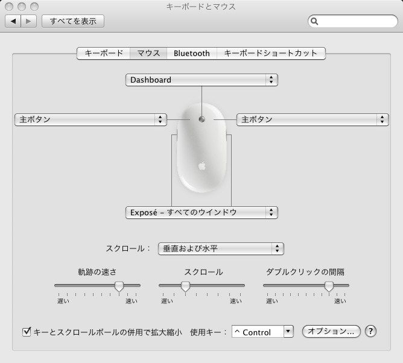
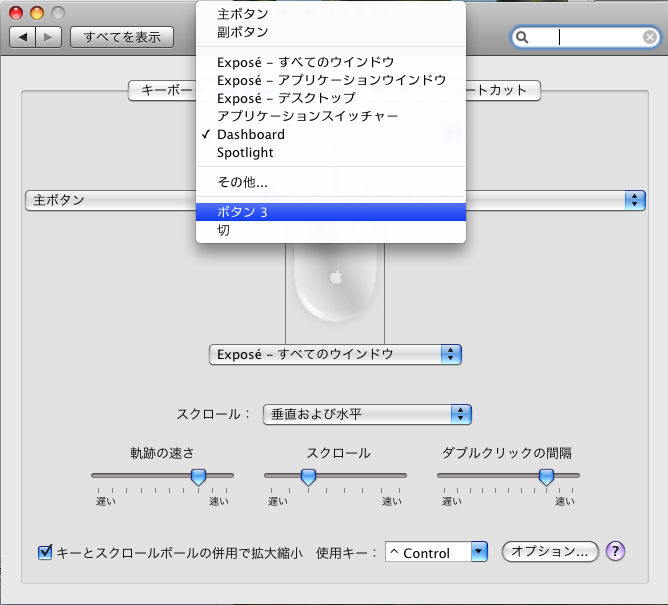

Welcome to BodyParts3D
User Guide
Release Note
Getting Started
User Interface
FAQ
What you can do
Anatomography Web API
Download
License
FAQ・トラブルシューティング
Macintoshマウスの中ボタンを有効にするには
「システム環境設定」→「キーボードとマウス」を開きます。 
中ボタンの設定を「Dashboard」から「ボタン３」に変更します。 
「アップルキー」を押しながら左右ドラッグでも中ボタンとして機能します。